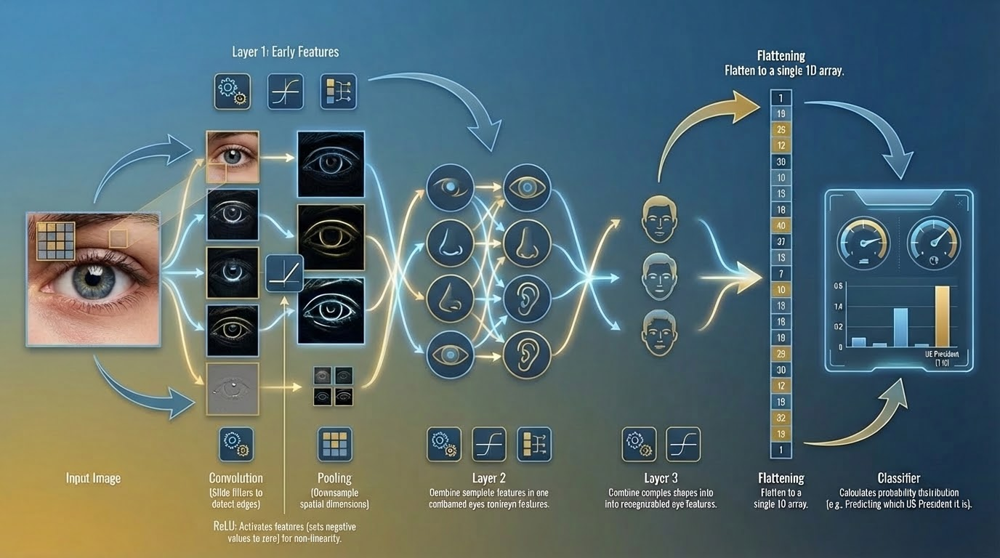

Global Sandbox Setup
Choose the Source Photograph
Select an image below. Hover over the image to flip it and reveal its numerical grid.

1. The Convolutional Pipeline
Raw Pixels
Feature Extraction
Nonlinearity
Downsampling
To 1D Vector
Task Logic
Task Execution
Network Architecture Diagram
Click the diagram below to expand it to full screen.

2. The Paper Shredder
Standard neural networks require a 1D line of data. Click 'Shred Image' to unroll the photograph. Hover over any piece to flip it and reveal its numerical grid value. Notice how destroying the 2D layout completely destroys the geometry of the image.
3. Convolution: Feature Extraction
A CNN slides a filter over the photo to generate a new image (Feature Map). Select a filter below. Hover over the Feature Map output image to flip the cards and mathematically trace the calculation back to the input!
Input Photo (8x8)
Filter (3x3)
Feature Map (6x6)
4. Nonlinearity (ReLU)
Notice the red areas? That is mathematical noise (negative numbers where the filter found the opposite of what it wanted). The ReLU formula $f(x) = \max(0, x)$ instantly squashes all negative noise to zero (pure black). Hover to flip and see the red negative numbers, then click 'Apply Threshold'.
Pre-ReLU Image (6x6)
Post-ReLU Image (6x6)
5. Max Pooling (Downsampling)
To increase the network's field of view, we shrink the image. Pooling divides the map into 2x2 blocks and extracts only the brightest pixel from each block. Hover over the 3x3 output to flip it, and watch it automatically highlight the exact 4 input numbers it condensed!
6x6 Input (Post-ReLU)
3x3 Pooled Image
6. Backpropagation (Learning)
CNNs don't start with perfect filters; they initialize with random noise. Backpropagation calculates the network's error and mathematically nudges the random numbers. Click 'Train Filter' to watch the random filter evolve. Notice how its messy Feature Map slowly snaps into focus to match the Target!
Random Filter
Current Feature Map
Target Filter
Perfect Feature Map
7. Final Output Paradigms
Once the image has been processed through all the layers above, what does the network actually do with the final mathematical features? The architecture of the very last layer defines the task.
Softmax Formula: $P(x_i) = \frac{e^{x_i}}{\sum_j e^{x_j}}$
Softmax squashes raw neural scores into a probability distribution summing to 100%.
8. FAQ & Insights
Show me the code! How do I build this CNN natively in Java (DL4J & ND4J)? ▼
To build and train neural networks natively on the JVM, the industry standard is Deeplearning4j (DL4J) powered by ND4J (which handles the heavy matrix math, just like NumPy in Python). Notice how the DL4J Builder pattern perfectly mirrors the visual steps in our sandbox:
import org.deeplearning4j.nn.conf.NeuralNetConfiguration;
import org.deeplearning4j.nn.conf.inputs.InputType;
import org.deeplearning4j.nn.conf.layers.*;
import org.nd4j.linalg.activations.Activation;
import org.nd4j.linalg.learning.config.Adam;
import org.nd4j.linalg.lossfunctions.LossFunctions;
// 1. Define the Pipeline Architecture
MultiLayerConfiguration conf = new NeuralNetConfiguration.Builder()
// 7. Backpropagation Setup (Error calculation & learning rate)
.updater(new Adam(0.001))
.list()
// 2 & 3. Convolution (3x3 Filter) + ReLU
.layer(new ConvolutionLayer.Builder(3, 3)
.nIn(1).nOut(64)
.activation(Activation.RELU)
.build())
// 4. Max Pooling (Downsampling by 2x2 blocks)
.layer(new SubsamplingLayer.Builder(SubsamplingLayer.PoolingType.MAX)
.kernelSize(2, 2)
.build())
// 5. Final Output Task (Classification with Softmax)
.layer(new OutputLayer.Builder(LossFunctions.LossFunction.NEGATIVELOGLIKELIHOOD)
.nOut(10)
.activation(Activation.SOFTMAX)
.build())
// 6. The Paper Shredder (Flatten to 1D)
// DL4J handles flattening automatically when you specify the 2D input geometry!
.setInputType(InputType.convolutional(240, 240, 1))
.build();
Behind the scenes, ND4J executes this exact architecture by converting your Java code into highly optimized C++ and CUDA instructions, allowing it to run the massive parallel matrix multiplications on GPUs just like Python frameworks do.
What is the exact sequence of a CNN training loop? ▼
Here is the exact lifecycle of a single image passing through the network (one iteration):
element-wise multiply and sum to
detect basic edges and vertical lines. Conv1->>ReLU1: 2. Pass feature map volume Note over ReLU1: Apply thresholding
(squash negatives to zero). ReLU1->>Pool1: 3. Pass activated edge features Note over Pool1: Downsample spatial dimensions
(e.g., Max Pooling). end Pool1->>L2: 4. Pass downsampled feature maps Note over L2: Middle Layers:
Filters combine early edges into parts
like circles, eyes, noses, and ears. L2->>L3: 5. Pass higher-level spatial features Note over L3: Deep Layers:
Filters combine parts into full,
complex structures like entire faces. L3->>Flat: 6. Pass final deep feature maps Note over Flat: Destroy spatial structure,
convert to a single 1D array. Flat->>Out: 7. Pass 1D feature array Note over Out: Calculate probability distribution
(e.g., Predicting which US President it is). Out-->>Data: 8. Return final classification
Why do standard neural networks fail on images? (The Paper Shredder) ▼
Does the network "know" it is looking for a nose or an eye? ▼
How does Backpropagation find better filters if it's blind? ▼
Does Max Pooling only shrink the detected features or the whole image? ▼
Why is the ReLU threshold so important? ▼
Autonomous Driving: Waymo vs. Tesla (Pure Vision)? ▼
Waymo (Robotaxis): Relies heavily on LiDAR (lasers that shoot out to measure exact physical depth), Radar, and pre-mapped HD maps, combined with cameras. It is incredibly precise but expensive and geofenced to areas it has mapped.
Tesla (Pure Vision): Argues that humans drive using only two cameras (our eyes) and a neural net (our brain). Tesla relies almost entirely on CNNs and visual Transformers to process raw camera feeds in real-time, calculating depth, segmentation, and driving regressions dynamically without HD maps or LiDAR.
What exactly is a "Feature Map"? ▼
Why do we need multiple filters in one layer? ▼
What happens if the object is off-center? (Translation Invariance) ▼
How do deeper layers see more complex things? ▼
What is "Stride" in a Convolution? ▼
What is "Padding" and why use it? ▼
What is the Softmax function used for? ▼
Classification vs. Object Detection? ▼
Object Detection (like R-CNN or YOLO) finds multiple objects inside the image, draws a bounding box around their exact X/Y coordinates, and classifies each box individually ("Dog here, Cat here, Tree here").
What is Semantic Segmentation? ▼
Instead of drawing boxes, Semantic Segmentation classifies every single pixel in the image. It outputs a color-coded mask showing exactly where the "road" ends and the "sidewalk" begins, which is critical for autonomous driving.